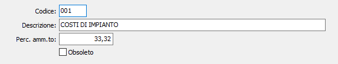

Categorie gestionali
Le categorie gestionali permettono di calcolare l’utilizzo del bene secondo percentuali di ammortamento stabilite con calcoli derivanti dalla conoscenza dell’effettiva usura del bene, indipendentemente dalle percentuali stabilite dall’ammortamento effettuato secondo le percentuali ministeriali. L’utilizzo di tali categorie è a discrezione dell’utente, che può utilizzarle per effettuare ammortamenti civilistici o gestionali oppure ai fini della contabilità industriale e controllo di gestione, preoccupandosi comunque di gestire la congruenza fiscale. Il calcolo degli ammortamenti industriali non da origine a scritture contabili automatiche.

CODICE: codice alfanumerico di tre caratteri a libera scelta dell'utente. Sul campo sono attive le funzioni di ricerca (F9).
DESCRIZIONE: campo alfanumerico di 50 caratteri per inserire la descrizione esplicativa della categoria di ammortamento.
PERCENTUALE AMMORTAMENTO: inserire la percentuale di ammortamento che verrà proposta al momento della creazione del cespite.
OBSOLETO: flag attivabile dall’utente per inibire il possibile utilizzo dell’elemento di tabella in esame nelle successive transazioni.